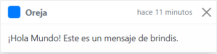
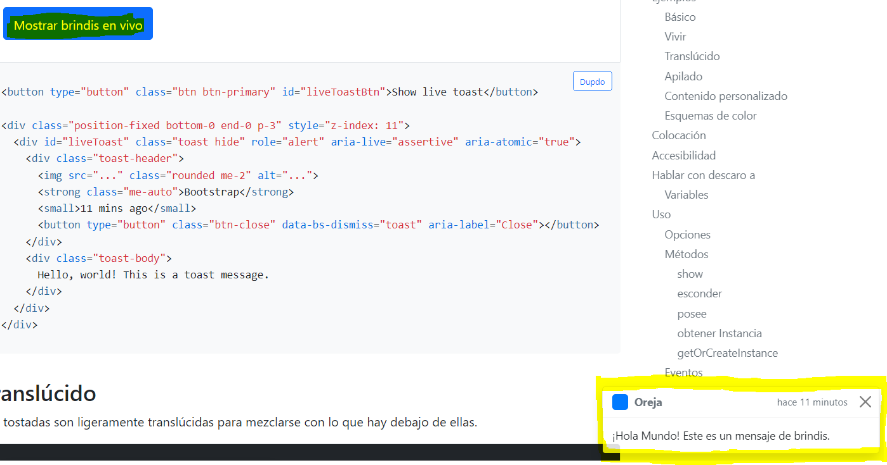
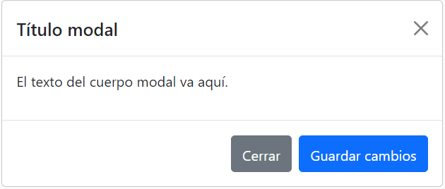

Una Card es un contenedor de contenido flexible y extensible. Incluye opciones para encabezados y pies de página, una amplia variedad de contenido, colores de fondo contextuales y potentes opciones de visualización. Si está familiarizado con Bootstrap 3, las tarjetas reemplazan nuestros viejos paneles, pozos y miniaturas. Una funcionalidad similar a esos componentes está disponible como clases de modificadores para tarjetas.
Las Cards admiten una amplia variedad de contenido, incluidas imágenes, texto, grupos de listas, enlaces y más. A continuación veremos un ejemplo de uso.
Esto es un ejemplo de uso de las Cards.
Como este ejemplo podemos realizar muchos más, como poner soperposición de texto a una imagen, colocar textos donde queramos, hacer deltro del card un grupo de listas, etc...
Puede ver estos ejemplos nombrados en la url: Pincha aquí
EJEMPLOS
Bootstrap incluye varios estilos de botones predefinidos, cada uno con su propio propósito semántico, con algunos extras incluidos para un mayor control.
Deshabilitar ajuste de texto
Si no desea que el texto del botón se ajuste, puede agregar la .text-nowrapclase al botón. En Sass, puede configurar $btn-white-space: nowrap para deshabilitar el ajuste de texto para cada botón.
Etiquetas de botón
Las .btnclases están diseñadas para ser utilizadas con el button elemento. Sin embargo, también puede usar estas clases en elementos a o input(aunque algunos navegadores pueden aplicar una representación ligeramente diferente).
Cuando se utilizan clases de botón en a elementos que se utilizan para activar la funcionalidad en la página (como el contenido colapsado), en lugar de vincular a nuevas páginas o secciones dentro de la página actual, estos vínculos deben tener una forma role="button" adecuada para transmitir su propósito a las tecnologías de asistencia, como lectores de pantalla
EJEMPLO
Botones de contorno
¿Necesita un botón, pero no los fuertes colores de fondo que traen? Reemplace las clases de modificador predeterminadas con las .btn-outline-*que eliminan todas las imágenes y colores de fondo en cualquier botón.
EJEMPLO
Tenemos muchas mas funciones como la talla del botón especificando btn-lg si queremos un botón grande o btn-sm si queremos un boton pequeño. También podemos deshabilitar el botón especificando disabled.
Proporcione mensajes de retroalimentación contextuales para las acciones típicas de los usuarios con el puñado de mensajes de alerta disponibles y flexibles.
EJEMPLO
Color de enlace
Use la .alert-linkclase de utilidad para proporcionar rápidamente enlaces de colores coincidentes dentro de cualquier alerta.
EJEMPLO
Iconos
Del mismo modo, puede usar las utilidades de flexbox y los íconos de Bootstrap para crear alertas con íconos. Dependiendo de sus íconos y contenido, es posible que desee agregar más utilidades o estilos personalizados.
EJEMPLO
Dismissing
Con el complemento JavaScript de alerta, es posible descartar cualquier alerta en línea. Así es cómo:
EJEMPLO
Alterne las superposiciones contextuales para mostrar listas de enlaces y más con el complemento desplegable Bootstrap.
Visión de conjunto
Los menús desplegables son superposiciones contextuales que se pueden alternar para mostrar listas de enlaces y más. Se hacen interactivos con el complemento de JavaScript desplegable de Bootstrap incluido. Se alternan al hacer clic, no al pasar el mouse; esta es una decisión de diseño intencional.
Los menús desplegables se basan en una biblioteca de terceros, Popper , que proporciona posicionamiento dinámico y detección de ventana gráfica. Asegúrese de incluir popper.min.js antes del JavaScript de Bootstrap o use bootstrap.bundle.min.js/bootstrap.bundle.jsque contiene Popper. Popper no se usa para posicionar los menús desplegables en las barras de navegación, ya que no se requiere un posicionamiento dinámico.
EJEMPLO
Botón único
Cualquiera .btn se puede convertir en un menú desplegable con algunos cambios de marcado. Así es como puede ponerlos a trabajar con cualquiera de los button elementos:
Y con elementos a :
La mejor parte es que también puedes hacer esto con cualquier variante de botón:
Split button
Del mismo modo, cree menús desplegables de botones divididos con prácticamente el mismo marcado que los menús desplegables de un solo botón, pero con la adición de .dropdown-toggle-split un espacio adecuado alrededor del símbolo de intercalación desplegable.
Como con los botones podemos especificarle la talla ademas de poder desplegar el menu en la dirección que queramos.
En esta web hemos utilizado los dropdowns en el nav para ir a los contenidos mas comodamente.
Los "spinners" de Bootstrap se pueden usar para mostrar el estado de carga en sus proyectos. Están construidos solo con HTML y CSS, lo que significa que no necesita JavaScript para crearlos. Sin embargo, necesitará JavaScript personalizado para alternar su visibilidad. Su apariencia, alineación y tamaño se pueden personalizar fácilmente con nuestras increíbles clases de utilidad.
Por motivos de accesibilidad, cada cargador aquí incluye role="status"un archivo span class="visually-hidden"Loading.../span.
EJEMPLO
Hilandero de borde
Con colores
Hilandero creciente
Con colores
Ademos podemos posicionarlo y darle tamaño ademas de añadir spinners a botonos como vamos a ver a continuación:
Esto es lo que necesita saber antes de comenzar con la barra de navegación:
Contenido compatible
Las barras de navegación vienen con soporte integrado para un puñado de subcomponentes. Elija entre los siguientes según sea necesario:
EJEMPLOS
NavBar con icono
NavBar clásico
NavBar con desplegable
NavBar con formulario y botón
En esta web hemos usado una combinación entre un Navbar clásico incluyendo despleglables y un formulario de busqueda.
Un toast envía notificaciones a tus visitantes con un brindis, un mensaje de alerta ligero y fácilmente personalizable
Los brindis son notificaciones livianas diseñadas para imitar las notificaciones automáticas que se han popularizado en los sistemas operativos móviles y de escritorio. Están construidos con flexbox, por lo que son fáciles de alinear y colocar.
Visión de conjunto
Cosas que debe saber al usar el complemento de tostadas:
Ejemplos
Toast Clásico

Toast accionado con botón

Ademas este elemento puede posicionarse con otros toast de forma apilada, aplicarle transparencia y cambiar el color del mismo.
Los grupos de listas son un componente flexible y potente para mostrar una serie de contenidos. Modifíquelos y amplíelos para que admitan prácticamente cualquier contenido.
Ejemplos
Ejemplo básico
El grupo de lista más básico es una lista desordenada con elementos de lista y las clases adecuadas. Construya sobre él con las opciones que siguen, o con su propio CSS según sea necesario.
Active items
Agregando .active a un .list-group-item para indicar la selección activa actual.
Con link y botón.
Numeradas
Em horizontal
Con colores
En esta web hemos usado este elemento en el menu lateral de navegación
Las insignias se escalan para coincidir con el tamaño del elemento principal inmediato mediante el uso de unidades em y tamaños de fuente relativos. A partir de la v5, las insignias ya no tienen estilos de enfoque o de desplazamiento para los enlaces.
Ejemplo
Encabezados
En botones
En botón posicionado
Con colores de fondo
Primary Secondary Success Danger Warning Info Light Dark
Insignias de píldora
Usamos la clase .rounded-pill de utilidad para hacer que las insignias sean más redondeadas con un border-radius.
Primary Secondary Success Danger Warning Info Light Dark
Antes de comenzar con el componente modal de Bootstrap, asegúrese de leer lo siguiente, ya que nuestras opciones de menú han cambiado recientemente.
Ejemlos
Componentes modales
A continuación se muestra un ejemplo modal estático position (lo que significa que displayha sido anulado). Se incluyen el encabezado modal, el cuerpo modal (obligatorio para padding) y el pie de página modal (opcional). Le pedimos que incluya encabezados modales con acciones de descarte siempre que sea posible, o proporcione otra acción de descarte explícita.

Demo en vivo
Alterne una demostración modal de trabajo haciendo clic en el botón a continuación. Se deslizará hacia abajo y se desvanecerá desde la parte superior de la página.
Contenido modal variable